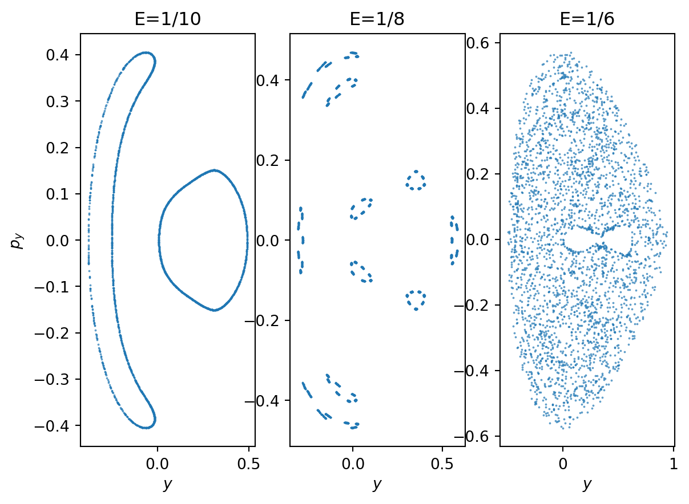

import numpy as np
import matplotlib.pyplot as plt
def euler(h, t_max, k=1):
"""
Solve the equation x' = k x, with x(0) = 1 using
the Euler method.
Integrate from t=0 to t=t_max using stepsize h for
num_steps = t_max / h.
Returns two arrays of length num_steps: t, the time coordinate, and x_0, the position.
"""
num_steps = int(t_max / h)
# Allocate return arrays
x = np.zeros(num_steps, dtype=np.float32)
t = np.zeros(num_steps, dtype=np.float32)
x[0] = 1.0 # Initial condition
for i in range(num_steps - 1):
x[i+1] = x[i] + k * x[i] * h
t[i+1] = t[i] + h # Time step
return t, x
k = -2.3
t_max = 5
t, x = euler(1, t_max, k)
plt.plot(t, x, label="h=1 Euler")
t, x = euler(0.7, t_max, k)
plt.plot(t, x, label="h=0.7 Euler")
t = np.linspace(0, t_max, 100)
plt.plot(t, np.exp(k * t), label="exact solution")
plt.title("k=-2.3")
plt.legend()
plt.show()Solving differential equations with SciPy
Newton’s fundamental discovery, the one which he considered necessary to keep secret and published only in the form of an anagram, consists of the following: Data aequatione quotcunque fluentes quantitates involvente, fluxiones invenire; et vice versa. In contemporary mathematical language, this means: “It is useful to solve differential equations”.
Vladimir Arnold, Geometrical Methods in the Theory of Ordinary Differential Equations
While Arnold (and Newton) are of course right the problem is that solving differential equations is not possible in general. Even the simplest example of a first order ordinary differential equation (ODE) in a single variable
\[ \frac{dx}{dt} = f(x, t) \tag{1}\]
cannot be solved for general \(f(x,t)\) 1. Of course, formulating a physical (or whatever) system in terms of differential equations represents a nontrivial step on the road to understanding it, but a lot remains to be done.
Numerical analysis of differential equations is a colossal topic in applied mathematics and we are barely going to scratch the surface. The important thing is to be able to access existing solvers (and implement your own if necessary) and crucially to understand their limitations.
1 Euler’s method
The basic idea behind all ODE solvers is to introduce a discretization of the equation and its solution \(x_j\equiv x(t_j)\) at time points \(t_j = hj\) for some step size \(h\) and \(j=0, 1, \ldots\). The very simplest approach is called Euler’s method 2 and approximates the derivative on the left hand side of Equation 1 as
\[ \frac{dx}{dt}\Bigg|_{t=t_j} \approx \frac{x_{j+1} - x_j}{h}. \tag{2}\]
Rearranging the ODE then gives the update rule
\[ x_{j+1} = x_j + hf(x_j, t_j). \tag{3}\]
Once an initial condition \(x_0\) is specified, subsequent values can be obtained by iteration.
Notice that Equation 2 involved a forward finite difference: the derivative at time \(t_j\) was approximated in terms of \(x_j\) and \(x_{j+1}\) (i.e. one step forward in time). Why do this? So that the update rule Equation 3 is an explicit formula for \(x_{j+1}\) in terms of \(x_j\). This is called an explicit method. If we had used the backward derivative we would end up with backward Euler method \[ x_{j+1} = x_j + hf(x_{j+1}, t_{j+1}) \tag{4}\]
which is implicit. This means that the update requires an additional step to numerically solve for \(x_{j+1}\). Although this is more costly, there are benefits to the backward method associated with stability.
1.1 Truncation error
In making the approximation Equation 2 we make an \(O(h^2)\) local truncation error. To integrate for a fixed time the number of steps required is proportional to \(h^{-1}\), which means that the worst case error at fixed time (the global truncation error) is \(O(h)\). For this reason Euler’s method is called first order. More sophisticated methods are typically higher order: the SciPy function scipy.integrate.solve_ivp uses a fifth order method by default.
The midpoint method is a simple example of a higher order integration scheme
\[ \begin{align} k_1 &\equiv h f(x_j,t_j) \\ k_2 &\equiv h f(x_i + k_1/2, t_j + h/2) \\ x_{j+1} &= x_j + k_2 +O(h^3) \end{align} \]
The \(O(h^2)\) error cancels! The downside is that we have two function evaluations to perform per step, but this is often worthwhile.
1.2 Rounding error
If you had unlimited computer time you might think you could make the step size \(h\) ever smaller in order to make the updates more accurate. This ignores the machine precision \(\epsilon\). The rounding error is roughly \(\epsilon x_j\), and if the \(N\propto h^{-1}\) errors in successive steps can be treated as independent random variables, the relative total rounding error will be \(\propto \sqrt{N}\epsilon=\frac{\epsilon}{\sqrt{h}}\) and will dominate for \(h\) small.
1.3 Stability
Apart from the relatively low accuracy that comes from using a first order method, the Euler method may additionally be unstable, depending on the equation. This can be demonstrated for the linear equation
\[ \frac{dx}{dt} = kx \]
For a linear equation the Euler update Equation 3 is a simple rescaling
\[ x_{j+1} = x_j(1 + hk) \]
so the region of stability is \(|1 + hk|\leq 1\). You can check that the backward Euler method Equation 4 eliminates the instability for \(k<0\).
2 Using SciPy
Coming up with integration schemes is best left to the professionals. Your first port of call for solving ODEs in Python should probably be the integrate module of the SciPy scientific computing library. The function scipy.integrate.solve_ivp provides a versatile API.
One important thing to understand is that all these integration schemes apply to systems of first order differential equations. Higher order equations can always be presented as a first order system, at the expense of introducing more equations. For example, in physics we are often concerned with Newton’s equation
\[ m\frac{d^2 \mathbf{x}}{dt^2} = \mathbf{f}(\mathbf{x},t), \]
which is three second order equations. We turn this into a first order system by introducing the velocity \(\mathbf{v}=\dot{\mathbf{x}}\), giving the six equations
\[ \begin{align} \frac{d\mathbf{x}}{dt} &= \mathbf{v}\\ m\frac{d \mathbf{v}}{dt} &= \mathbf{f}(\mathbf{x},t). \end{align} \]
As a simple example, let’s consider the pendulum equation
\[ \ddot \theta = -\sin\theta \]
which can be cast as
\[ \begin{align} \dot\theta &= l\\ \dot l &= -\sin\theta \end{align} \]
Solving the equation using SciPy just requires us to define a function giving the right hand side of these equations
def pendulum(t, y): return [y[1], -np.sin(y[0])]
# The pendulum equation: y[0] is theta and y[1] is land then calling solve_ivp
from scipy.integrate import solve_ivp
import matplotlib.pyplot as plt
t_max = 1000
pendulum_motion = solve_ivp(pendulum, [0, t_max], [2, 0], dense_output=True)The option dense_output=True is used to specify that a continuous solution should be found. What this means in practice is that the returned object pendulum_motion has a sol property that is an instance of OdeSolution. sol(t) returns the computed solution at \(t\) (this involves interpolation). We can use this to plot the pendulum’s trajectory in the \(\theta- l\) phase plane, along with the contours of the conserved energy function
\[ E(\theta, l) = \frac{1}{2}l^2 - \cos\theta \]
Code for plot
fig, ax = plt.subplots()
theta = np.linspace(-1.1 * np.pi, 1.1 * np.pi, 60)
l = np.linspace(-2, 2, 60)
E = -np.cos(theta[np.newaxis,:]) + (l[:,np.newaxis])**2 / 2
# Note the use of broadcasting to obtain the energy as a function of the phase space coordinates
xx, yy = np.meshgrid(theta, l)
ax.contourf(xx, yy, E, cmap='Reds')
t = np.linspace(0, t_max, 10000)
ax.plot(*pendulum_motion.sol(t))
plt.xlabel(r'$\theta$')
plt.ylabel(r'$l$')
plt.show()The thickness of the blue line is due to the variation of the energy over the \(t=1000\) trajectory (measured in units where the frequency of linear oscillation is \(2\pi\)). Notice that we did not have to specify a time step: this is determined adaptively by the solver to keep the estimate of the local error below atol + rtol * abs(y), where atol and rtol are optional arguments that correspond to the absolute and relative tolerances, with default values of \(10^{-6}\) and \(10^{-3}\) respectively. The global error is of course much larger. In general, monitoring conserved quantities is a good experimental method for assessing the accuracy of integration.
The alternative to dense_output=True is to track “events”, which are user-defined points of interest on the trajectory. We supply solve_ivp with functions event(t, x) whose zeros define the events. We can use events to take a “cross section” of higher dimensional motion. As an example let’s consider the Hénon–Heiles system, a model chaotic system with origins in stellar dynamics
\[ \begin{align} \dot x &= p_x \\ \dot p_x &= -x -2\lambda xy \\ \dot y &= p_y \\ \dot p_y &= - y -\lambda(x^2-y^2). \end{align} \]
These coupled first order systems for the \(N\) coordinates and \(N\) momenta of a mechanical system with \(N\) degrees of freedom are an example of Hamilton’s equations. The phase space is now four dimensional and impossible to visualize.
The conserved energy is
\[ E = \frac{1}{2}\left(p_x^2+p_y^2 + x^2 + y^2\right) + \lambda\left(x^2y-\frac{1}{3}y^3\right) \]
The existence of a conserved quantity means that, once the energy is fixed by the initial conditions, the subsequent motion must be confined to a three dimensional submanifold.
When \(\lambda=0\) the HH system corresponds to an isotropic 2D harmonic oscillator. In this case not only is the energy conserved, but also the angular momentum
\[ J = x p_y - y p_x \]
Fixing \(E\) and \(J\) gives a two dimensional submanifold that is in fact a torus (it’s not obvious).
If we take a Poincaré section with \(x=0\) a system with energy \(E\) must lie within the curve defined by
\[ E = \frac{1}{2}\left(p_y^2 + y^2\right) -\frac{\lambda}{3}y^3. \]
Starting from \(x=0\) we can generate a section of given \(E\) by solving for \(p_x\)
\[ p_x = \sqrt{2E-y^2-p_y^2 + \frac{2\lambda}{3}y^3} \]
def henon_heiles(t, z, ùúÜ):
x, px, y, py = z
return [px, -x - 2 * ùúÜ * x * y, py, -y - ùúÜ * (x**2 - y**2)]
def px(E, y, py, ùúÜ):
return np.sqrt(2 * E - y**2 - py**2 + 2 * ùúÜ * y**3 / 3)
def section(t, y, ùúÜ): return y[0] # The section with x=0
t_max = 10000
ùúÜ = 1
hh_motion = []
for E in [1/10, 1/8, 1/6]:
hh_motion.append(solve_ivp(henon_heiles, [0, t_max], [0, px(E, 0.1, -0.1, ùúÜ), 0.1, -0.1], events=section, args=[ùúÜ], atol=1e-7, rtol=1e-7))We can then plot a section of the phase space with increasing energy, showing the transition from regular to chaotic dynamics.
Code for plot
fig, ax = plt.subplots(1, 3)
energies = ["1/10", "1/8", "1/6"]
for idx, data in enumerate(hh_motion):
ax[idx].scatter(*data.y_events[0][:, 2:].T, s=0.1)
ax[idx].title.set_text(f"E={energies[idx]}")
ax[idx].set_xlabel(r'$y$')
ax[0].set_ylabel(r'$p_y$')
plt.show()
Here’s a nice demo on Poincaré sections if you’d like to learn more.
Footnotes
We’ll refer to \(t\) as the time in the following, as this is the most common setting in physics.↩︎
As featured in Hidden Figures.↩︎